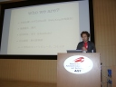
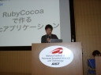
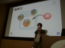
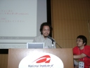
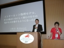
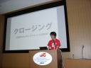

6 月 11 日 ライトニングトークス
ライトニングトークスとは
各人持ち時間五分延長無しで次々と行う、自由演題の公募講演 (というよりスピーチ？) のコーナーのことです。 結果的に、登壇者側からすれば、数十分の講演では持て余してしまう小ネタやちょっとした主張の発表の機会ができ、逆に聞き手側からすれば、おもちゃ箱をひっくりかえしたような多士済々の発表を楽しめる、絶好の機会となります。 もちろんここは Ruby カンファレンス。何らかの形で Ruby と関係するネタが揃いはしましたが、まさに中身は見ての・聞いての・お・楽・し・み♪
- 時間
- 16:42〜17:38 (5 分× 11 本 = 55 分 + 幕間の段取時間)
なお、ライトニングトークスのレポートは、ライトニングに時間が過ぎていったため走り書きです。日本 Ruby カンファレンス 2006 実行委員会では動画と音声の配布を検討しています。より詳しくはその配布が実現するのをお待ちください。
片山俊明「BioRuby」

- 講演資料
- http://bioruby.org/archive/doc/Japanese/BR060611-rubykaigi/ (PDF, 音声, 動画)
- ゲノム度 ★★★
- 螺旋系文字列処理度 ★★
- 十二支度 ★
- DNA シーケンスを旋律化などとは言語道断度 -
歴史
2000 年そそのかされて立ち上げ。2005 年未踏ソフトに。2010 年にはクマムシゲノムを制覇できるか？
背景
今、世界でどんどんゲノムが決まっています。ゲノムプロジェクトの進展には文字列処理に強いスクリプト言語が貢献しています。
連携
BioRuby で扱うゲノムの情報と ChemRuby の扱う化合物の情報を連携して薬の開発を！
BioRubyShell
生物屋さんでも利用できるようにしたい！と使いやすいインタフェースを作った。
DNA の文字列を表示する
コンソールで二重螺旋を表示しています。大拍手！ (笑)
例: アルコールを
前提知識: アルコール耐性は生まれつき (ある程度) 決まってしまっている (=酒に強くなるのには限度がある)。 BioRuby で DNA 配列を取得し、蛋白質のもととなるアミノ酸配列を生成。そして生物操作「こいつをアルコールに弱くしてやろう」(笑)
DNA シーケンスは音楽化できる！ (笑)
着メロなどに是非。
藤本尚邦「RubyCocoaで作るMacアプリケーション」

- Cocoa 度 ★★★
- プレゼン環境がプレゼンネタ度 ★★
- メソッド度 ★★★
- 早送り度 ★★
紹介
OS X
DHH さんも愛用！ (たしかにプレゼンには白いノートを使っていました)
COCOAって？
API が C じゃない。C++ でもない。Objective-C。オブジェクト指向。…いろいろと、なにか (R ではじまる) に似ている (笑)。 Objective-C の作者の Brad Cox、じつは Ruby 好き。
RubyCocoa
ブリッジ。
メリット
コンパイル・リンクが不要なので手軽。
- irb を使って Cocoa の振る舞いをチェックできる。
- Perl や Haskell にも似たようなものがある。
使用例
- Mac に喋らせる。デモ。
- カウントダウン。今プレゼン画面の左上に出ている。
- プログラミング教育。
- 商用サーバで使ってる人も。
開発者紹介
木村さんと Laurent さんが私より詳しい？
将来
(非公式情報だが) 次期 OS X に標準搭載？
さいごの 10 秒で
プレゼン早送り、というか超高速！ (笑)
立川察理「Ruby による HL7 プロトコルライブラリ」
日本 HL7 協会より。

- 医療システム度 ★★★
- 相互運用度 ★★
- 気宇壮大仕様も壮大度 ★★
- ていうか繰り返しの do ってカルテの do だってね度 -
病院の診療業務について
関わっているのはお医者さんだけじゃない！ 業務が IT 化されてきた。電子カルテも普及。 複数ベンダの医療情報システムが錯綜…相互接続で標準規格が必要！
そこで HL7 プロトコル
アプリケーション層。ANSI 公認で ISO 認定済。問題は仕様が巨大なこと。
Ruby ライブラリ HL7R
現段階ではエンコードの変換まで実装済。
目指すところ
RoR アプリケーションへの組み込み。最終的には病院間をも結び連携医療の一助としたい! (拍手)
cuzic「Ruby On Rails の Relative Path プラグイン」

- さっきの話度 ★★
- さりげないデモ度 ★★
- リダイレクト注意度 ★★★
- Rails 果敢に改良度 ★★
自己紹介
いちばん重要。Ruby 関西勉強会の広報。
RoR の問題点
- 外部依存の設定が多い。
- DRY じゃないよね (httpd.conf / .htaccess / routes.rb)
- 任意の Location で公開するのが難しい。
- リバースプロキシとの共存をどうする？
リンクをすべて相対パスに変更しよう！
Alias 不要。リバースプロキシ環境にやさしい。
実演
include するだけ！ href に ../ がつくようになる。
特徴
- 果敢な実装 (笑)
利用可能な環境
- いろいろ
大西正太「Rails 製 CMS『Rubricks』」
- CMS 度 ★★★
- Rails 度 ★★
- インクリメンタルだけどひやひやプレゼン度 ★
- なんか、やっぱ Zope でいいんじゃん度 -
WEBrick リスペクト？
関係ない (笑)。でもリスペクトはしている。
About
Ruby on Rails 上で実装された CMS。Zope とか目指す。使いやすい MIT ライセンス。
デモ
- realtime validate
- group management treeview
- access management
- component → rzip (rubyzip 遅め)
- この場で追加指定……
- テーマ管理
- メニュー管理
- 刺さった？ きた。(拍手)
- ブロック管理、位置が移せる
ワークフロー機能
- コンテンツ承認
今後の動き
- 高速化
- scaffold
各種リンク
- コンポーネント大歓迎！
(……テープ交換……)
えとー「わりと簡単 ruby アプリを Debian へ」

- アプリ作成法度 ★★
- 特定環境過剰適応度 ★★★
- バッドノウハウ度 ★★★
- ユーザーに届いているか度 ★★
deb パッケージについて考えてほしい
なぜパッケージなのか？
- ユーザには慣れている環境というものがある。対応していないものは、無いものと同じ！
- 個人的な理由 (Debian に過剰適応)
マイナーっぽさの検証
登録 deb が Perl 製、Python 製 の 1/20 くらい。Ruby はユーザに到達していないのでは？
つくろう
- バッドノウハウ好きにはたまらない世界 (笑)。
- 一番重要なのは、なんでこんなこと……とは思わないこと。
作者にお願い
- ライセンスが明確に判るようにしてほしい。
- 開発が活発なときに Changelog がわけわからず、というのもイヤ
- これからもアプリケーション等よいコードをいろいろ書いてください！
- もっと Ruby をユーザに届けましょう (拍手)
須藤功平「Ruby on 風博士」

- 講演資料
- http://pub.cozmixng.org/~kou/archives/ruby-on-kazehakase.pdf , http://pub.cozmixng.org/~kou/archives/RubyKaigi2006/ (html 版)
- 組み込み度 ★★★
- 敵は例外度 ★★★
- プレゼン環境がプレゼンネタ度 ★★
- 兎と亀度 ★
Webブラウザに組み込んだ
- インタプリタ初期化
- バインディング初期化
Ruby に [BUG] を吐かせないこと
本体落ちるだけならまだしも、本体にバグの責任をおしつけてしまう (笑)。
機能追加
GtkAction が「機能」を Object 化している。機能を追加するには GtkAction を作ってブラウザに放り込めばいい。
デモ: RubyDialog
- 組み込んでいるインタプリタを使える。irb みたいなもの。
- ここからブラウザを操作できる。
- dRuby を使って Rabbit をいじることもできる。
今日のシステム
携帯から Rabbit いじっている。(拍手)
Yugui「なぜブロックは素晴らしいか – Ruby が Lisp でない理由」
- 講演資料
- http://idm.s9.xrea.com/etc/ruby-kaigi-2006/ruby-kaigi-2006-LT-yugui/ , http://idm.s9.xrea.com/etc/ruby-kaigi-2006/ruby-kaigi-2006-LT-yugui.zip (アーカイブ)
- メソッド度 ★★
- 話題流転度 ★★★
- 継続かわいいよ継続度 ★
- 覚えてるよ塊魂 (そっちか) 度 ★
Matz も大好き
λと形が違う。 Ruby の力すなわち block。
(1) loop 構文
- イテレータ
- 抽象化されているのでわかりやすいです
- とても簡単に書ける、皆さんが毎日使ってる、素数の列挙 (笑)
(2) block は塊
- 持ち運べる。
- 待塊→言語内 DSL (Rake とか)
これは遅延評価されるからこそ。遅延評価すばらしい。
(3) なんかくくっているやつ
これがブロックの真髄。
- C あるいみ簡単。でもメモリ管理がたいへんでソースがこんなに (笑)
- C++ メモリ管理を解決したけど面倒なんで GC (笑)
- だから Java はすごい (笑) でもソースは結局こんなに (笑) メモリ以外は結局たいへん。
- Ruby なら GC ＋目に見えるライフサイクル。
ひとこと「Block 使っとけ」
結論: なぜならば、すべては見たとおり。
大林一平「Ruby Reference Seeker for Emacsen」

- メソッド度 ★
- コンソール度 ★★★
- プレゼン環境がプレゼンネタ度 ★★
- 諸君、私は vi が好きだ度 -
自己紹介わりと省略
RRSE とは
- ReFe をつかって Emacs のバッファに結果表示する。
デモ
- メソッドも表示。でも include とかは全部ひっぱってくるのでごちゃごちゃ (笑)
- クラスメソッドはちょっと違う。ちゃんと見てくれる。
- ブロックもちゃんと表示する。
実装は Ruby + Elisp
今後
- ri 対応
- rdoc 対応
- ちょっとした補完 (Python の idle 程度)
- 目指すは Visual Studio？
VIM 版
……自分で作ってください！
市川宙 (Gimite)「人工無能 ロイディ」

- IRC の住人度 ★
- 人工無脳度 ★★★
- 言語処理度 ★★★
- つっこむタイミング重要度 ★
ロイディ (Chatbot Reudy) のプロフィール
Ruby 製の無脳
ししゃも、Chot、Margarine などは Ruby で書かれている。
事例
検索する。その他 (笑)
特徴
反応を作りこんでない。
しくみ
似た発言を探す。返事をベース発言とする。単語をおきかえる。
今後
- 4.0
- on Rails
完
おまけ: Ruby で自然言語処理
便利
- 数式に近い表現
- 永続化が楽
ちょっと不便
- 文字列型とバイト列型なので文字コードがバラバラ……ライブラリはいったいどうすれば？
- 本来のソースコード
- nkf_loads とかやりたくない
江渡浩一郎「インターネット物理モデル: または私はいかにして悩むのをやめ転がる玉を愛するようになったか」

- ハードウェア寄り度 ★★
- 閉館度 ★★
- 背中煤けて悩むのをやめた度 ★★★
- VisualStudio 度 -
- きっと今なら DL 度 ★★
おはようございます
2001 年からの常設展示物
裏側
コンピュータの塊。
展示物の説明
作者は？
5 名。誰がリーダーでもなかった。もともとはコンセプト設計の役割。最終的な制御ソフトは自分で作った。ハードまでさわった。
デスマ
電子回路うごかず。一週間前まで動かず。VB か VC++ かの究極の二択を迫られる…… どちらもイヤだ！
Win32API
ドキュメントない。安心してくださいソースがあります。
- VB → DLL の呼び出しを真似しよう。できる。
- OLE とはちょっと違う。
- 引数まちがえるとすぐに core を吐いて死ぬのが男らしい。
- その代わりにどんな DLL でも呼べる。
お披露目直前の 7 日間で
プロトタイプが動くようになった！
そのあと 4 年間
そのプロトタイプが動き続ける (つい先日まで; 現在はリファクタリングによりお役御免。インターネット物理モデルの補遺もご参照ください)。
クロージング (17:40〜17:47)

オープニング元気なさそうって言われてショックを受けていた高橋さんが、今度は熱く、カンファレンスを締めくくりました。
楽しんでいただけましたか？
拍手多数！
次回も参加したいですか？
拍手多数！
もう一度、お世話になった方々へ。
- スポンサ
- 講演者
- パネリスト
- ライトニングトークス
- 当日スタッフ
- 実行委員会
拍手多数！
高揚感のうちの閉会となりました。参加者のみなさん、おつかれさまでした。